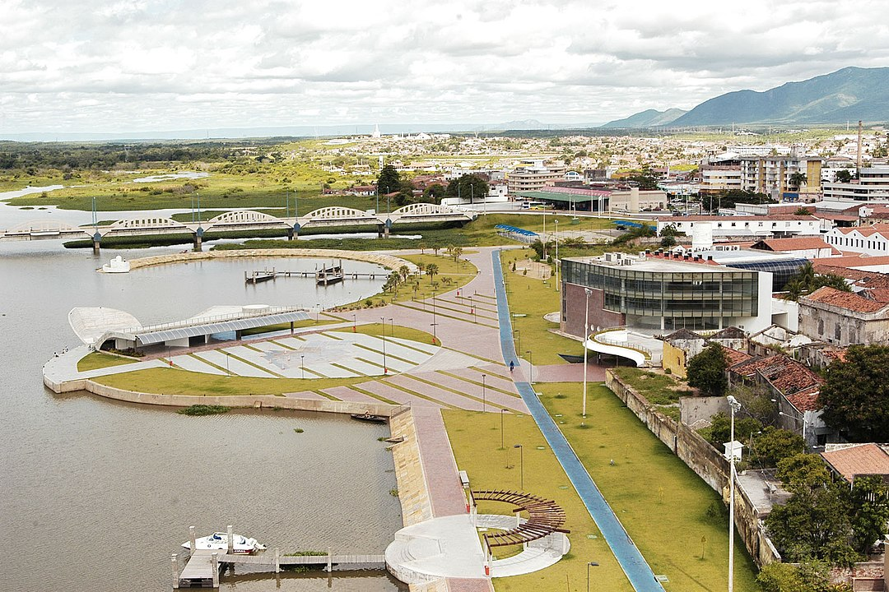

| Cabeçalho | |
| Menu |

Título da notíciaLocalizada no interior do estado do Ceará, Sobral é o segundo município mais desenvolvido do estado, atrás apenas de Fortaleza. O sítio urbano de Sobral foi tombado como patrimônio cultural do Brasil pelo Instituto do Patrimônio Histórico e Artístico Nacional em 1999. Foto: Margem Esquerda por darlanblue, CC BY-SA 3.0, https://commons.wikimedia.org/w/index.php?curid=5183101 O turismo é uma das principais fontes de renda de Sobral, devido as belezas naturais, o centro histórico do município e também a diversos museus. Destacam-se como principais pontos turísticos de Sobral: o Açude Jaibaras, o Arco de Nossa Senhora de Fátima, o Beco do Cotovelo, a Cadeia Pública, a Casa da Cultura de Sobral, o Colégio Sant’Ana, o Cristo Redentor, a Estação Ferroviária, a Fonte do Pajé, a Igreja da Sé, o Museu Diocesano, o Museu do Eclipse, o Parque da Lagoa da Fazenda, o Rio Acaraú, o Teatro São João e a Casa do Capitão Mor. O Teatro São João é a principal instituição cultural de Sobral. Sua inauguração ocorreu em 26 de setembro de 1880. No ano de 2004 o teatro foi restaurado e reinaugurado. A Casa da Cultura é o principal espaço para artistas de Sobral e região, dotada de uma dinâmica infraestrutura e moderno acervo de arte e cultura. Nela constam uma biblioteca virtual, oficinas de arte e sala de cinema. Não deixe de conhecer os museus da cidade, em especial o Museu do Eclipse, criado em 1999 para fomentar a ciência e celebrar o fato de a “Teoria da Relatividade” ter sido confirmada na cidade. |
| Rodapé | |